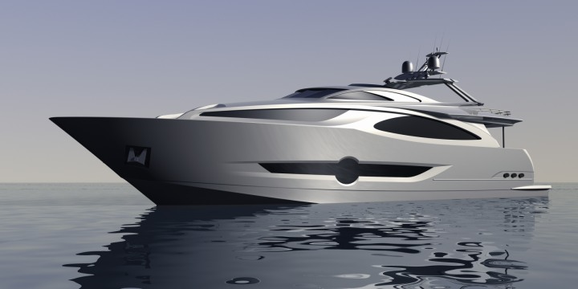
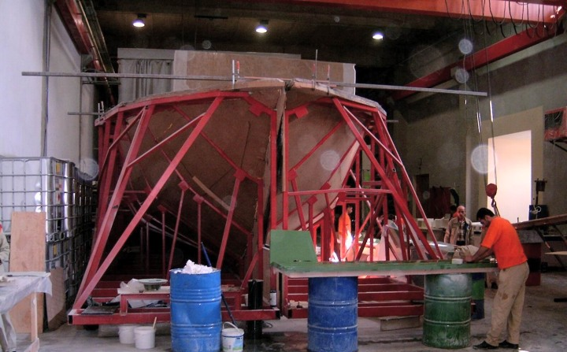

|
 Endüstriyel tasarýmcý Can Yalman ile röportaj: Endüstriyel tasarýmcý Can Yalman ile röportaj:
Bize kendinizden, kariyer geçmiþinizden bahseder misiniz?
Can Yalman: Tasarým hayatýma küçükken Lego larla oynayarak baþladým. Çok daha sonra kendimde bu baþlangýcýn etki ve tepkilerini grafik çalýþmalarý yaparken anladým.
California'da San Jose State Universitesi'nde bir sene grafik eðitimi aldýktan sonra Parsons School of Design'da Endüstriyel Tasarým ve Mobilya Tasarýmý eðitimi aldým. Amerika'da 12 sene yaþadým, bunlarýn 8 senesini New York'ta yaþadým. Tabiî ki eðitimim sýrasýnda New York'da yaþayan ve çalýþan profesyonellerden aldýðýmýz dersler dýþýnda New York'un enerjisi, karýþýmý ve imkanlarý kendimin ve tasarýmlarýmýn geliþmesine sonsuz katkýsý olmuþtur.
Bu süre zarfýnda Ýstanbul'dan ve ailemden kopmadan buradaki hayatý da takip ediyordum ve dönmeye karar verdim. Arçelik'e tasarýmcý olarak girdim ve iþ dünyasýný, Türkiye'de çalýþmanýn, tasarým yapmanýn zorluklarýný, zevklerini ve püf noktalarýný öðrendim. Arçelik tasarým ekibi ile 1994 - 2001 arasý çok zevk alarak, Arçelik'e gerçekten katkýda bulunarak yeni ürünler geliþtirdik; Orbital Buzdolabý gibi Arçelik için klasikleþebilecek ürünlere imza attýk. Arçelik'te geçirdiðim dönem içinde CAID (Computer Aided Industrial Design - Bilgisayar Destekli Endüstriyel Tasarým) departmanýnýn kurulmasýnda ve CAID Bölümü'nün bugün Türkiye'nin konusunda en geliþmiþ departman olmasýnda katkým olmuþtur.
Yedi senelik pazarlama, üretim, ürün geliþtirme, insan iliþkileri gibi konularda profesyonel bazda deneyim kazandýktan sonra kendi tasarým ofisimi (Can Yalman Design; www.canyalman.com) kurdum.
Hizmet verdiðiniz firmalar ve yaptýðýnýz projeler hakkýnda bilgi verir misiniz?
Can Yalman: Son 4 senedir müþterilerimizle beraber daha iyisini ve doðrusunu özgün tasarýmlarla yapmak için kendimizi geliþtiriyoruz;
Turmak, ilk müþterilerimden biri olarak bugün geldiðimiz noktada çok yenilikçi tüm dünya pazarlarýndan istenen, son derece özgün ve günümüzün trend ve ihtiyaçlarýný doðru karþýlayan bir Picnic seti ile kendine yeni pazarlar yaratmýþtýr. Bir promosyon ürünleri þirketinden, tasarým dünyasýnda adý geçen ve Dünya'nýn her köþesinde dükkaný olan Conrans Shop'a ürün veren bir þirket olmuþtur.
Hisar, ilk defa dýþardan bir tasarým firmasý ile çalýþýrken büyük risklere girerek farklý ürünler geliþtirmeyi tercih etti. Bizim onlara sunduðumuz vizyon alýþtýklarý ürünlerden biraz farklý olmasýna raðmen onlar þimdi bu yeni ürünlerin keyfini çýkarmakta.
RocaKale firmasý ile uzun vadeli bir çalýþma çerçevesinde ilkleri Zen ve Flow serileri olmakla, yeni banyo virtrifiye ürünleri geliþtirmekteyiz.
Numarine ile hangi kapsamda çalýþmalar yapýyorsunuz?
Can Yalman: Numarine ile olan iliþkimiz daha þirketin oluþumuna, þirketin isminin ve logosunun geliþimine kadar dayanmaktadýr. Numarine için yaptýðýmýz çalýþmalar içinde isim, kurumsal kimlik, logo, tekne dýþ ve iç tasarýmlarý, katalog ve reklam çalýþmalarý, fuar stantlarý ve posterlerine kadar tüm görsel çalýþmalar yer almakta.
Hangi yazýlýmý ve modülerini kullanýyorsunuz? Ne sebeple bunlarý seçtiniz?
Can Yalman: Numarine için yaptýðýmýz 3 boyutlu tasarýmlarýmýzda Alias StudioTools programýný kullanýyoruz. Alias benim okul dönemimden beri, 1991 senesinden beri kullandýðým bir program. Bugün 12. versiyonunu kullanmaktayýz, o zaman 5 ile baþlamýþtýk ve bu zaman zarfýnda kendini sürekli geliþtiren Alias, tasarým dünyasýnýn bir numaralý, etkileþimi ve tasarým metodolojisini en yakýndan izleyen programý olarak, her zaman kullandýðým program olmuþtur.

Genelde hazýrladýðýmýz modelleri A Class çalýþmamýz gerekmektedir. Özellikle 30 metrelik bir tekne gibi devasa yüzeylerde yansýmalar ve kýrýlganlýk özellikle önem kazanmakta. Bazen tek bir yüzeyi istediðimiz kalitede oluþturabilmek için defalarca ve günlerce çalýþmamýz gerekebiliyor.
3D tarama ve tersine mühendislikten faydalanýyor musunuz?
Can Yalman: Evet. Numarine için yaptýðýmýz ilk tekne 52' Open, bizim 3D yüzey modellerimiz kullanýlarak üretilmiþti. Ama o zamanlar kalýbý bir seferde iþleyebilecek büyüklükte CNC tezgah bulunmadýðý için tekne kalýbý çeþitli kesitler halinde manüel yöntemlerle üretilmiþti; Bu da tabiî ki bilgisayarda ilk tasarlanan modelden belli bir sapmaya sebep oldu. Bu model için sonradan istenen deðiþiklikleri bilgisayar üzerinde yapabilmek ve elle yapýlan eski kalýplarla uyumunu garanti edebilmek için ilk yapýlan elle üretilmiþ kalýplarý 3D optik tarama ile dijital ortama aktardýk. Bu da mümkün olduðunca tüm üretim ve tasarým sürecini elektronik ortamda birleþtirebilmiþtir.
Daha sonraki modellerde ise her zaman yüzeyler doðrudan elektronik ortamda iþlenmiþtir, bu da tasarýmdan ürüne geçiþte sýfýr kayýp anlamýna gelmekte.
Numarine, 3D Optik Tarama için Cadem A.Þ.'den hizmet aldý.
Endüstriyel tasarým konusunda kariyer yapmak isteyen gençlere tavsiyeleriniz nelerdir?
Can Yalman: Tasarýmcýlar için tavsiyem mümkün olduðunca gezmek ve görmek. Yaþamak, yaþayarak deneyerek öðrenmek, ve gerçekten algýlayarak yaþamak. Tasarýmcýlarýn meraklý olmalarý gerekir, gördüklerinin özüne inebilmeliler, farklý kulvarlardan farklý deneyimler kazanmalarýný öneririm. En önemlisi tasarýmýn bir süreç olduðunu kavramalarýný ve bu süreç'in kendileri içinde geçerli olduðunu bilmelerini ve sabýrla, kendilerini sürekli geliþtirerek istedikle sonuca ulaþabileceklerini bilmelerini isterim
Üretim ve tekne inþasý:
Firma tekne inþasý aþamasýnda MS Project yanýnda kendi geliþtirdiði ve sürekli güncellenen bir imalat planlama ve takip (MRP) yazýlýmý da kullanýlýyor. Bu sayede her iþçiye her gün bir iþ emri verilerek günün hangi saatinde hangi operasyonlarý yapacaðý detaylý bir biçim de bildirilmiþ oluyor;
Yat inþasý sýrasýnda mobilyalarýn yerleþtirilmesi
Ýç bölmelerde arasý bal peteði yapýsýnda dolgulu kontrplak sandviç malzeme kullanýlmaktadýr.
Kullanýlan elyaf ve reçineye baðlý olarak vakum altýnda reçinenin belli zamanda aldýðý yol deneysel olarak ölçülüyor. Bu sayede imalat aþamasýnda reçinenin hangi aralýklarla kalýba verileceðine karar veriliyor.


Teknenin üst bölgesine ait bir kalýp
72' Fly modeline ait teknenin alt gövde kalýbý
Bu kalýbýn içinde çalýþan iþçiler kompozit sandviç yapýnýn ortasýnda kalacak PVC köpük malzemeyi döþüyor
Üretimden çýkmýþ bir üst parça
Tekne gövdesi üzerinde son yüzey iþlemleri yapýlýyor
|